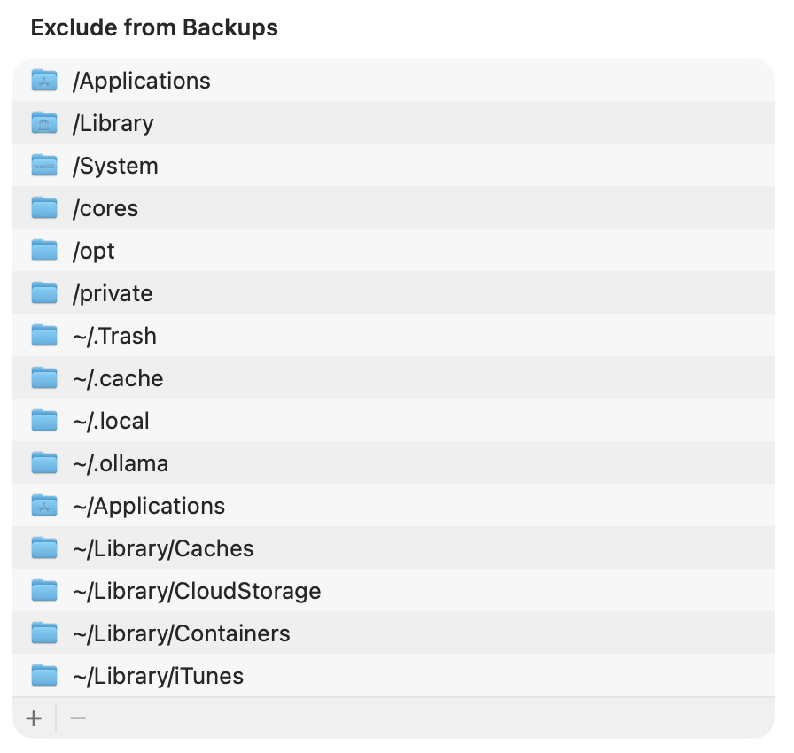

Back up only your own data with Time Machine¶
A backup is one of the most important actions to keep control of our data, and it is one of the basic habits of Personal digital protection. It matters even more to me, since I am using fewer and fewer cloud services. In this post, we will tune Time Machine so that it backs up only what I care about.
Why Not Back Up Everything¶
For years I have chosen Apple systems, and on the Mac I rely on Time Machine. It is a good tool; there are better ones, but it is embedded in the system, so it is immediately available to less technical people too.
Time Machine has one big problem: it backs up everything. In my case this is useless and harmful:
- Useless: if the Mac breaks, is lost or is replaced, I want to restart from a clean point zero, not from a copy of the old system;
- Harmful: backing up everything is slow, and it needs more and more space.
It is like moving to a new house: I take my belongings, not the walls. My belongings are all in my home directory, /Users/dainese. This is where I want Time Machine to focus.
Exclusions in Settings¶
Time Machine lets us define exclusions in Settings → General → Time Machine → Options:

We can read the same list from the command line:
$ defaults read /Library/Preferences/com.apple.TimeMachine SkipPaths
(
"/Users/dainese/Applications",
"/Users/dainese/Library/Caches",
"/System",
"/Users/dainese/.local",
"/opt",
"/Users/dainese/.ollama",
"/Users/dainese/.cache",
"/Library",
"/Users/dainese/.Trash",
"/Applications",
"/Users/dainese/Library/CloudStorage",
"/cores",
"/Users/dainese/Library/Containers",
"/private",
"/Users/dainese/Library/iTunes"
)
SkipPaths contains only the fixed-path exclusions added by the user. Other exclusions exist in other forms, and they are not in this list.
Four Kinds of Exclusion¶
Time Machine has three kinds of exclusion that we can configure, and a fourth one that Apple configures for us:
- Sticky: the default of
tmutil addexclusion. It is an extended attribute (com.apple.metadata:com_apple_backup_excludeItem) attached to the item itself, so it follows the item when we move or copy it. It does not need root, and it does not appear inSettings; - Fixed-path: tied to a path, not to the item (option
-p). It needs root. It is the kind thatSettingswrites, and the one thatSkipPathslists. It works even if nothing exists at that path yet, and it applies again as soon as something is moved there; - Volume: tied to the volume UUID (option
-v), so it survives a rename or a different mount point. If we erase the volume, the exclusion is gone; - Standard: the built-in list of items that Time Machine skips by itself. We do not configure it, and it does not appear in
Settings.
The consequence is simple: a folder can be excluded and not appear in any list. For this reason, "what is in the list?" is the wrong question. The right one is "is this path excluded?", and we will ask it in a moment.
A More Practical Way¶
The Settings route often did not behave as I expected. Recently I found an alternative, more practical way to exclude directories: one command, with all the paths:
sudo tmutil addexclusion -p /Applications /Library /System /cores /opt /private /Users/$(whoami)/.cache /Users/$(whoami)/.local /Users/$(whoami)/.ollama /Users/$(whoami)/.Trash /Users/$(whoami)/Applications /Users/$(whoami)/Library/Caches /Users/$(whoami)/Library/CloudStorage /Users/$(whoami)/Library/Containers /Users/$(whoami)/Library/iTunes
The command adds a fixed-path exclusion for each path, the same kind that Settings creates. sudo is required by -p. $(whoami) is replaced by the current user, so the command works on any account without editing.
Check What Is Included¶
We can verify which folders are included or excluded, including the ones that matter to me:
$ tmutil isexcluded /Applications /Library /System /cores /opt /private /Users/$(whoami)/.cache /Users/$(whoami)/.local /Users/$(whoami)/.Trash /Users/$(whoami)/Applications /Users/dainese/Library/Application\ Support/MobileSync /Users/dainese/Library/Caches /Users/$(whoami)/Desktop /Users/$(whoami)/Documents /Users/$(whoami)/Music /Users/$(whoami)/Pictures /Users/$(whoami)/src
[Excluded] /Applications
[Excluded] /Library
[Excluded] /System
[Excluded] /cores
[Excluded] /opt
[Excluded] /private
[Excluded] /Users/dainese/.cache
[Excluded] /Users/dainese/.local
[Excluded] /Users/dainese/.Trash
[Excluded] /Users/dainese/Applications
[Included] /Users/dainese/Library/Application Support/MobileSync
[Excluded] /Users/dainese/Library/Caches
[Included] /Users/dainese/Desktop
[Included] /Users/dainese/Documents
[Included] /Users/dainese/Music
[Included] /Users/dainese/Pictures
[Included] /Users/dainese/src
For each path, the command prints [Excluded] or [Included]. I expect system, applications and caches to be excluded, and Desktop, Documents, Music, Pictures and src to be included. As far as I know, tmutil has no verb that lists all the exclusions, so this check is the only way to be sure.
Lesson Learned¶
The result is a much faster and lighter backup, adapted to what I need.
- Know where your data lives: for me it is one directory; everything else can be reinstalled;
- Ask the path, not the list: sticky and standard exclusions are invisible in
Settings, so usetmutil isexcluded; - Choose the right kind: sticky for an item that may move, fixed-path for a location that must stay excluded.
I believe a backup should follow what we value, not what the system decides to copy.